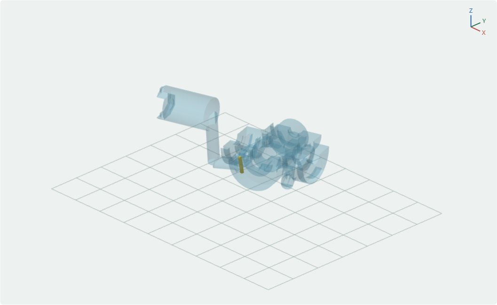

彩色拆撑 3D · 打印盘布局 · 打印与拆撑 · 检查与例外
A1 mini · 0.4 mm 喷嘴 · PLA · 按层打印。D01、D02 为 0.16 mm，其余盘 0.20 mm，首层均 0.20 mm。保留项目内各对象参数、位置和朝向，自动支撑关闭，文件中已包含可拆支撑与已核验 G-code。
共 18 个实例；P130 在三处盘位重复出现。表中列出需重点检查的区域，部分属于孔口微小边界交叠。
| 零件 | 盘位 | 清理位置 |
|---|---|---|
| P035 | D10-02 | 头部 C14 四角连接孔、PCB 夹螺母位 |
| P051 | D11-03 | 左上臂 C14 四角连接孔、沉孔和螺母位 |
| P071 | D10-04 | 右上臂 C01 肩轴孔及邻近五金孔口 |
| P073 | D02-02 | 右上臂 C14 四角连接孔、沉孔和螺母位 |
| P093 | D11-05 | 左大腿 C01 肩轴孔及邻近五金孔口 |
| P095 | D01-01 | 左大腿 C14 下方四孔；重点清理 H2、H4 中的 T202、T203 |
| P117 | D09-02 | 右大腿 C14 四角连接孔、沉孔和螺母位 |
| P130 | D11-02, D12-01, D12-06 | 右脚 C14 四组肩轴/M3 孔、垫片槽、螺母位及四角连接孔 |
| W007 | D06-02 | 左小腿磁铁盖固定螺孔及邻接肩轴通道 |
| W016 | D09-03 | 左脚肩轴孔、球关节 M3 螺母/垫片侧入口 |
| W017 | D11-01 | 右脚肩轴孔、球关节 M3 螺母/垫片侧入口 |
| X038 | D03-01 | 骨盆两侧大腿调节螺母入口与壳体固定孔 |
| X046 | D04-01 | 胸架肩轴孔、头部调节螺母入口与壳体固定孔 |
| X058 | D01-04 | 左上臂调节螺母入口、壳体孔及肘部邻接五金孔口 |
| X062 | D07-01 | 右锁骨/右上臂壳体孔、肩轴孔及磁铁盖固定螺孔 |
| X066 | D06-03 | 右上臂壳体固定孔与肘部肩轴孔 |
全部结论来自数字检查，本批尚未实物试打。
半透明蓝色是永久本体，黄色是单独显示的孔内细齿；这两张图隐藏了橙色支撑鳍。完整支撑和抽出顺序请打开上方三维视图。
